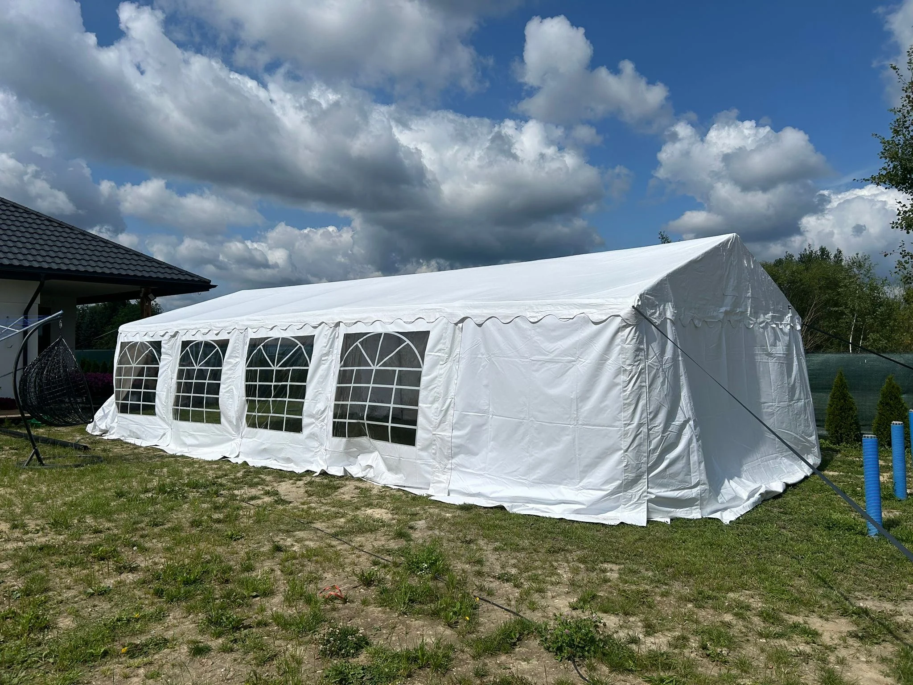

— Sandomierz, 110 km DK77 z bazy. Najcenniejszy zabytek świętokrzyskiego — średniowieczny rynek, gotycka katedra, brama Opatowska, zamek królewski, wszystko nad Wisłą. Od 2008 roku plan filmowy serialu "Ojciec Mateusz". Dowóz gratis, ~120 min dostawczakiem. Znamy Dwikozy, Zawichost, Klimontów, Koprzywnicę. Typowe sceny: wesela w ogrodach i hotelach na obrzeżach miasta, komunie parafialne, eventy turystyczne nad Wisłą. Ekspres od 200 zł, pakiet pełny 1 500-1 600 zł.
Sandomierz (~23 000 mieszkańców) to miasto powiatowe o jednej z najbogatszych historii w Polsce — prawa miejskie od 1286 roku, dawna stolica regionu sandomierskiego, ważne miasto handlowe nad Wisłą. Stare miasto to żywy zabytek — średniowieczny układ urbanistyczny, kamienice z XIV-XVIII wieku, katedra Narodzenia NMP z gotyckimi freskami ruskimi (XV w., unikat w skali Europy), brama Opatowska, zamek królewski. Od 2008 roku miasto jest także serialowym planem filmowym — "Ojciec Mateusz" kręcony na sandomierskich ulicach uczynił je rozpoznawalnym w całej Polsce. Dla klientów z powiatu sandomierskiego obsługujemy zarówno klasyczne wesela i komunie, jak i bardziej specyficzne lokalizacje (np. nad Wisłą, w pensjonatach przyzabytkowych).
Miasto turystyczne + rolniczy powiat. Miks eventów weselnych, odpustowych, rodzinnych i kulturalnych w specyficznej, zabytkowej scenerii.
Dystans spory, ale ciągle w darmowym zasięgu. Trasa przez Kielce i Opatów — regularnie jeżdżona.
Dowóz gratis (110 km). Urodziny, mały event, piknik.
Wesele 80-100 os., komunia, jubileusz.
Festyn OSP, event turystyczny, festiwal miejski. FV.
— Brutto, VAT w cenie. Dowóz do Sandomierza gratis — zasięg darmowy 250 km od bazy. Pełen cennik →
Cały powiat sandomierski + pogranicze wschodnie w darmowym zasięgu 250 km od bazy:
Sierpień 2025, wesele w Dwikozach (5 km N od Sandomierza, nad Wisłą). Pensjonat rodzinny z tarasem nad rzeką, 90 gości. Namiot 6×12m z pakietem pełnym (stoły bankietowe, krzesła tapicerowane, girlandy LED, oświetlenie namiotowe) = 1 600 zł brutto. Dojazd 120 min DK77 przez Kielce, Łagów, Opatów. Montaż w piątek rano (4h z uwagi na dystans), demontaż w niedzielę po południu. FV na osobę prywatną. "Para chciała, żeby widać było Wisłę ze środka namiotu — ustawiliśmy tak, żeby jeden z krótszych boków był otwarty na rzekę. Zachód słońca nad Wisłą, sandomierska panorama w tle. Klasyka regionu."
Jak w cenniku głównym — bez dopłat lokalnych. Ekspres 200 zł, duży 1 200-1 300 zł, pakiet 1 500-1 600 zł, zestaw od 2 500 zł. Brutto.
110 km DK77 przez Kielce, Łagów i Opatów = ~120 min dostawczakiem. Gratis. Przy tym dystansie preferujemy rezerwację 5-7 dni wcześniej.
W ścisłym centrum rzadkie — przepisy, konserwator, dostęp. Wesela typowo w hotelach i ogrodach na obrzeżach Sandomierza (Mokoszyn, Zarzekowice) lub w sąsiednich gminach (Dwikozy, Zawichost). Namiot 5×10 lub 6×12m bez przeszkód.
Ekipa serialowa od 2008 roku kręci w Sandomierzu. W centrum przez kilka tygodni w roku bywają plany zdjęciowe — dla eventów w samej starówce warto sprawdzać terminy z góry. Poza centrum (hotele, pensjonaty, ogrody) nie ma to wpływu.
Tak — Dwikozy, Zawichost, tereny nadrzeczne. Piękne lokalizacje na plenery. Sprawdzamy teren pod kątem wysokiej wody (wiosna), stabilności gruntu, dojazdu dostawczakiem. Wizja lokalna gratis.
Tarnobrzeg (podkarpackie) jest 15 km od Sandomierza — tarnobrzeskie firmy mają bliżej. Ale porównaj ofertę — my trzymamy cenę bazową bez lokalnego narzutu turystycznego. Dla wymagających klientów czasem opłaca się zapłacić za dłuższy dojazd, dostając stabilną logistykę.
— 110 km z bazy. Dzwonisz, 5 min rozmowy, 24h oferta. Dowóz gratis. Znamy region.
zadzwoń · 796 886 222